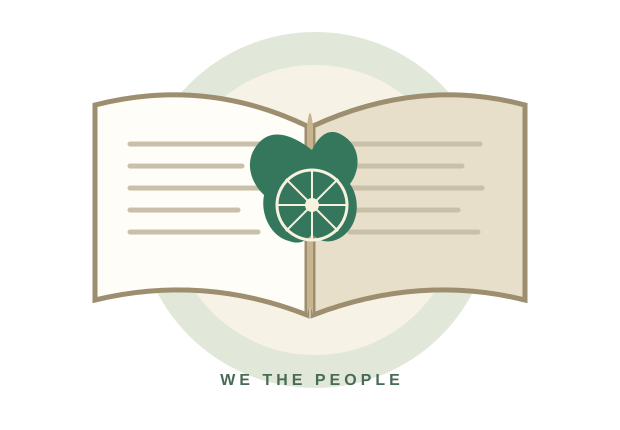

Emergency Articles
352 – 356 – 360National → State → Financial. Think: Nation, State, Money.
One topic at a time. Easy memory tricks, picture-based explanations, clean timelines and the complete Constitution text with edition links.

No clutter. Just choose a topic and learn it clearly.
India's identity: Sovereign, Socialist, Secular, Democratic, Republic. Its promise: Justice, Liberty, Equality and Fraternity.
Use the picture, say the cue aloud, then recall the fact without looking.
First the Union map, then a pay packet, an oath, Rajya Sabha seats, tribal areas, three lists, languages, laws, defection, villages and cities.
The sequence is the memory hook. The cards below give the exact subject of each Schedule.

National → State → Financial. Think: Nation, State, Money.
73rd Amendment = Panchayats. 74th = Municipalities.
Habeas Corpus, Mandamus, Prohibition, Certiorari, Quo Warranto.
Service rules → pleasure → safeguards → All-India Services → PSCs → PSC functions.
Learn the subject of a Part first. Then connect its Article range.
Search by Article number, keyword or topic. Open a card for the simple meaning and a memory cue.
These are selected high-yield study cards, not the complete Article text. Use the Full Constitution reader for the complete official document.
Follow the timeline in order. Short tenures and repeat terms are shown separately so the sequence is easy to remember.
Dates are based on Prime Minister of India and Prime Minister's Museum records. Use the official profile for updated details.
Official Prime Minister archive ↗Use the official text for exact wording. Choose an edition below; the latest official document library is linked separately from the verified 2024 English full-text PDF.
The 2024 English–Hindi diglot edition is consolidated as on 1 May 2024 and incorporates amendments up to the 106th Amendment Act, 2023. The Legislative Department's documents page lists a Constitution of India publication dated 23 December 2025. Always check the edition date on the official source before quoting a provision.
Ten short questions. No pressure — use mistakes as revision clues.